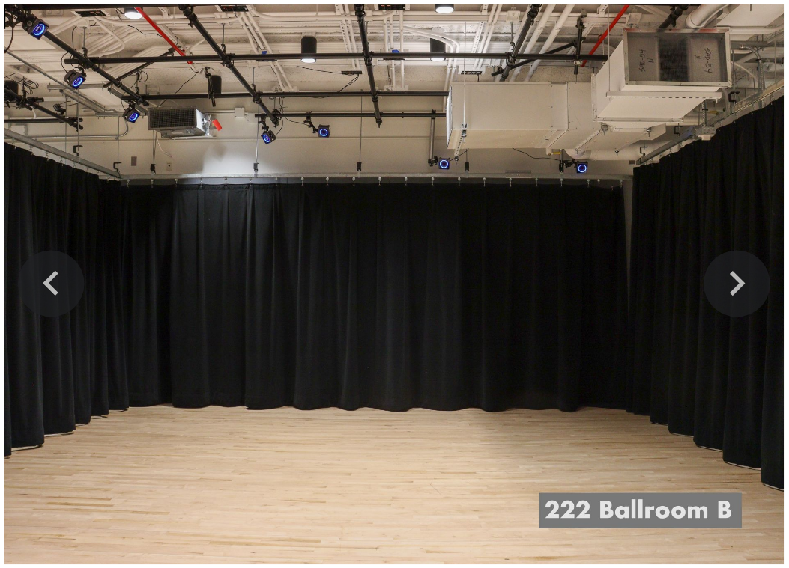
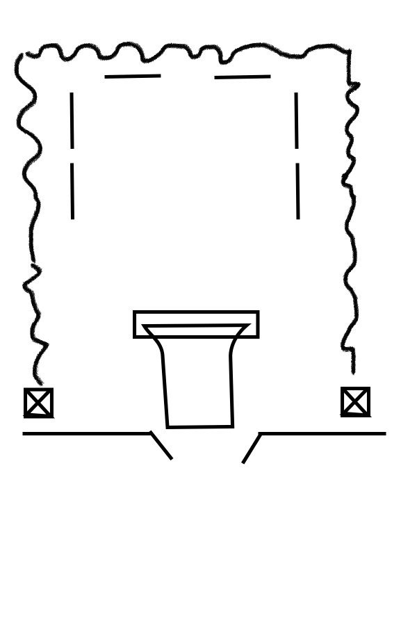

9/18 - 9/24 9/25 - 10/1 10/2 - 10/8 10/9 - 10/15 10/16 - 10/22 10/23 - 10/29 10/30 - 11/5 11/6 - 11/12 11/13 - 11/19 11/20 - 11/26 11/26 - 12/3 12/4 - 12/11
electronic components:
- pcb
- R1, R2
- R3, R4, R5
- LED 1 (red)
- LED 2 (yellow)
- LED 3 (green)
- ARD1
- ARD2, ARD3
- ARD4
- IC1, IC2
- IC3, IC4
- JP6
- JP9
- *
- Beeper
- Arduino Connector
- JP1
- JP2, JP7
- JP3
- JP4
- JP8
- Extension Cable
knitting components:
- knitting machine
- yarn
I ordered all of the hardware parts for connecting the knitting machine to an Arduino. I am getting really excited about the presentation as I've been discussing it with Sam.
| Week | Large Objectives | Small Objectives | Accomplished |
| 9/18 - 9/24 | Order Parts | Talk to Scott | I ordered my PCB and talked to Scott. |
| 9/25 - 10/1 | talk to Sam about bringing in the machine | talk to Kit, Benedetta bring in the machine |
|
| 10/2 - 10/8 | have all the hardware | prep software start documenting do I want to have video documentation? |
not quite, some resistors/little components were caught up in ordering process. Arriving 10/11 |
| 10/9 - 10/15 | start and finish soldering.
solder on Thursday. get yarn |
Get Yarn. cake the yarn I already have |
Found Old Mill Yarn and some craiglist people. |
| 10/16 - 10/22 | start software
GET YARN |
focus on software here, document |
I got the yarn. I ordered it to IDM which was way more successful and secure. |
| 10/23 - 10/29 | finish software | ||
| 10/30 - 11/5 | start knitting | document knitting | |
| 11/6 - 11/12 | knit | think about what my title is, document knitting!, video |
|
| 11/13 - 11/19 | knit, finish one knit piece, hang knit piece in window |
write out an artist statement | I have spoken to Sam about pre-display setup and location |
| 11/20 - 11/26 | knit | ||
| 11/27 - 12/3 | knit | ||
| 12/4 - 12/11 | finish knit edges | ||
| final week | hang the pieces |
This project is situated on the intersection of craft and technology. The art of “craft” is a dying medium. Knitting, weaving, sewing, quilting, all things considered to be a womanly task not worthy of the title “art.” Technology, on the other hand, can almost justify itself in any space. I don’t find so much validity in the buzzwords of technology, but I love the art that is created out of hacking an artform. In mixing coding with knitting, I hope to create a new medium that subverts each from their own prejudices. Coding can become something very handmade, changing with each pass of a carriage under hand, and knitting can be less representational and more indicative of a desire to be post-human.
I got my knitting machine off Craigslist from a lovely lady who drove down to Chinatown from upstate to let me buy her knitting machine. On the walk to my apartment which she and her husband accompanied me on, she introduced me to the concept of All Yarns Are Beautiful (AYAB), a German knitting project that connects to the computer so you can more easily upload custom designs to the computerized knitting machine. This is an existing technology that the AYAB team has worked on, and it is open source on GitHub for messing with it and playing with the technologies. From there, it was a dream to work with AYAB for my own knitting purposes.
With this project, I will create large scale knitted planes that are decorated with color and variation of pixels, patterns, and texture, all while using just yarn, a knitting machine, and a little bit of code.
Everything I need to make my arduino shield was supposed to arrive on Wednesday. The package got delayed to
Friday, then was stolen from my hallway. I have reason to believe it was someone from my building, but I have waited three days.
I am so mad!
It's not even something worth stealing! But they did and haven't returned it.
I don't even think I'll get my money back from Digi-Key.
This sets me back at least two weeks to account for delivery time.
old typewriters
traditional knitting patterns
giant sweater
Sam and I have discussed where I will place my work. I will take up the media commons ballroom B!
 